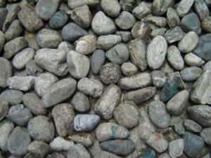

Burning
 De: La Frikipedia, la enciclopedia extremadamente seria.
De: La Frikipedia, la enciclopedia extremadamente seria.
«Son de esta gente, que cuando crees que no pueden ser más rockeros, van y te sorprenden»
~ Un pijo hablando sobre ECDL
De la serie Grupos musicales:
[[Imagen:{{{imagen}}}|200px|center]]
{{{descripción}}}
| Origen
|
La Elipa, Madriz
|
| Tiempo
|
Desde la era Precámbrica hasta la actualidad pasando por la Edad Media
|
| Estilo
|
Rock and roll puro y duro
|
| Discográfica/s
|
Jajajaja que Infobox más cachonda me ha tocado
|
| Miembros
|
Johnny Cifuentes, Edu Pinilla, Carlos Guardado, Kacho Kasal.
|
| Estado
|
Viejos Intoxicados de experiencia
|
| Sitio web
|
La web más rockera de España
|
Religión (o banda) de rock español de la generación Precámbrica que empezó cantando en extranjero (también llamado "inglés") pero como ni Dios les entendía nadie iba a sus conciertos y por lo tanto ni ligaban ni ganaban pasta para cervezas, elemental para cualquier rockero. Entonces llegaron a la sabia conclusión de que si cantaban en español podrían fornicar con mujeres de buen ver y beber cerveza hasta montar una destilería. Hay una leyenda muy curiosa acerca de ellos que dice que siguen tocando
Componentes
Los profetas del rockandrolismo en España que un día se pasaron por un vertedero y cogieron lo primero que se les ocurió para destrozar el pop, regayton y toda la mierda que poblaba la música en España (el regayton no existía pero luchan contra él en la actualidad) son los siguientes. Algunos de los pertenecientes a la mitología popular están muertos por lo tanto también santificados en esta nuestra religión rockandrolista.
Actuales
Los que heroicamente siguen vivos y luchando son:
- Johnny Cifuentes, teclista, cantante, cubata y litrona
- Edu Pinilla (Espinilla pa' los amigos), guitarrista (obviamente peor que Pepe Risi)
- Carlos Guardado, bajito. Ehh... quiero decir bajista.
- Kacho Kasal (solo Kome Kellogs Kon leche de la vaKa de milKa. A veces inKluso choKolate), a las baKetas.
Pertenecientes a la mitología popular
Los que murieron heroicamente en acto de servicio o los que son unos cobardes de mierda y se retiraron dejaron el grupo a medias son:
- SuperPepe Risi (sí, como los risketos), el mejor guitarrista español (después de Paco de Lucía) y Dios de cinco mitologías precolombinas. DEP
- Toño Martín, cantante por poco tiempo y guitarrista por menos. DEP también.
- Quique Pérez, bajista y controlador mental (véase Rappel)
Compañeros de cama borracheras
Borracheras no faltaron y compañeros tampoco. Estos de aquí abajo aparte de borracheras también compartieron con los Burning cacerías de canis, cacerías de pijos, cacerías de emos, mujeres, etc.
- Loquillo y los Trogloditas (sí, todos ellos)(sí, ya sé que son muchos). Loquillo llevó de
putas gira por España a Pepe Risi, pero se murió. Yo no digo nada
- Mamoncín
- Abuela Ángeles (se la tiraron todos, juntos y por separado)
- Stewie y Brian Griffin que gracias a su máquina del tiempo pudieron llegar a una era casi desconocida para el ser humano.
- The Rolling Stones. Eran de la misma quinta.
Y un largo y glorioso etcétera que no puedo ni quiero citar por su larga extensión.
Discografía
- I'm Burning ("Estoy ardiendo"). Con este disco debut demostraban su capacidad para llegar muy alto en el rock y a la vez su sagacidad irónica.
- ¿Qué hace una chica como tú en un sitio como éste?. Y así contribuyeron a la historia de la música rock española y de paso publicaron un libro con frases para ligar hecho por italianos babosos....
 Los fiestorros que se montaban los Burning en sus inicios
- En directo. Así corroboraron que buscar nombres para los discos no era su objetivo en este mundo.
- Una noche sin tí. Disco en directo en el que actuaron un montón de
payasos artistas de renombre y se pillaron el pedo de su vida rindieron culto homenaje a superPepe Risi.
Temazos
Aquí dejo una lista de temazos de los Burning por si alguien está interesado en conocer el grupo que con la ignorancia que hay últimamente lo dudo.
- ¿Qué hace una chica como tú en un sitio como este?. Mítico tema que todos conocemos y ninguno sabe de quien es.
- Esto es un atraco. La mayor compresión de palabras vulgares que veréis en una canción. Es una verdadera obra de arte.
- Chueca. Sobre el conocido barrio mandrileño. No hace falta que diga nada no?
- Johnny b' goode. ¡Todos pensabais que era de Chuck (Berry) pero os equivocabais!¡Ja!
- Ginebra seca. Dedicada a la bebida a la que los miembros de este grupo tenían tanto aprecio.(Johnny sigue teniéndolo)
- Jim dinamita. Trata sobre el estereotipo de un rockero de los de verdad (sí, de esos que ya no quedan). Gran tema.
Fenómenos paranormales
Hay una serie de fenómenos paranormales relacionados con este grupo, de estos de mearse y no echar gota. Los afectados de la zona de la teta izquierda que no lo lean.
- Tanto SuperPepe Risi como Toño Martín murieron un 9 de mayo. Los dos eran guitarristas y de vez en cuando cantaban (mal pero cantaban). Esto le quitaba protagonismo a Johnny Cifuentes, que curiosamente en un
test de la SuperPop estudio psicológico exhaustivo se descubrió que todos los 9 de mayo desde que había nacido tenía una laguna mental, lo que significa que perdía el conocimiento y hacía cosas raras.
- SuperPepe Risi murió cuando se fue de
putas gira con Loquillo. ¿Nos dejó SuperPepe, como buen mesías, en un acto de bondad divina después de montar un fiestorro, o es por su calidad de Dios que cada vez le aparecen más asesinos?
- Los
mariquitas de los Jonas Brothers mancillaron el nombre de este maravilloso grupo en una de sus mierdas canciones(Burning up)
¿Sabías que...
- ... Pepe Risi es Dios?
- ... Johnny Cifuentes tiene caspa?
- ... si les das la vuelta a las canciones de Burning se oye una cantidad ingente de palabras desordenadas y sin sentido?
- ... Burning ganó a Extremoduro en un concurso sobre grupos de rock menos conocidos por los pijos?
- ... Burning no es una marca de profilácticos?
- ... en el pelo de Johnny Cifuentes vive una tribu india que jamás ha establecido contacto con el exterior?
- ... la mayor parte de lo que pone aquí son paridas y Burning es un grupo exitoso de verdad?
- ... Pepe Risi es Dios?
Véase también
Enlaces externos
Frikipedia 2005-2016, Licencia
GFDL 1.2 - Extraído por FrikiLeaks